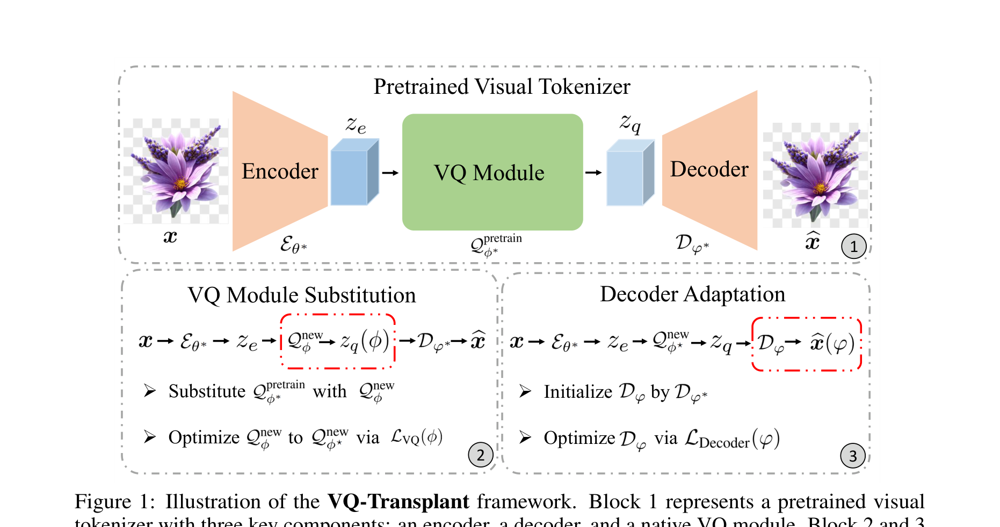
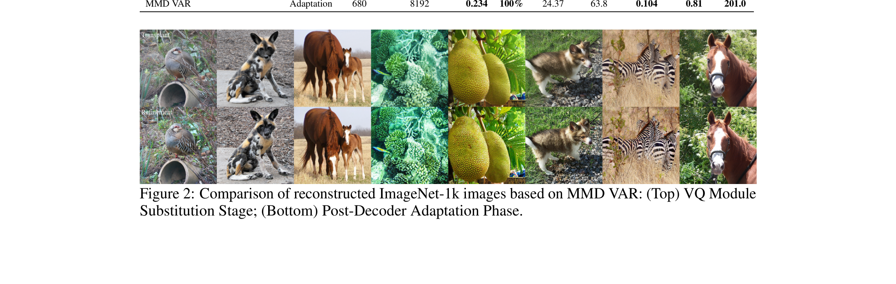

21.8×
faster training than standard VAR
Plug-and-play replacement of VQ modules in pretrained visual tokenizers without costly end-to-end retraining.
University of Toronto · Boston College · Vijil
faster training than standard VAR
rFID on ImageNet-1K with MMD-VAR, K=8192
rFID with extended decoder adaptation
codebook utilization for MMD-VAR
Motivation
Modern discrete visual tokenizers achieve strong reconstruction fidelity, but training them from scratch with adversarial losses is expensive and unstable. VQ-Transplant decouples VQ-method development from full tokenizer retraining.
Method
The framework first substitutes the VQ module while preserving the pretrained encoder-decoder, then lightly adapts the decoder to the new quantized latent space.

Freeze the pretrained encoder and decoder; train a new VQ module on encoder features.
Freeze the encoder and transplanted VQ module; lightly adapt the decoder to the new quantized latent space.
Use maximum mean discrepancy to align feature and codebook distributions without Gaussian assumptions.
Main Results
VQ-Transplant reaches strong reconstruction fidelity while substantially reducing training cost.
| Method | Codebook size | Adaptation | rFID ↓ | Codebook utilization ↑ |
|---|---|---|---|---|
| VAR tokenizer | 4096 | — | 0.92 | 100% |
| MMD-VAR | 4096 | 5 epochs | 0.91 | 100% |
| MMD-VAR | 8192 | 5 epochs | 0.81 | 100% |
| MMD-VAR | 8192 | 20 epochs | 0.74 | 100% |
Visual Results
VQ module substitution alone can introduce a mismatch between the transplanted VQ space and the pretrained decoder. Lightweight decoder adaptation improves high-frequency detail and reconstruction fidelity.

Generalization
VQ-Transplant also demonstrates strong cross-dataset reconstruction on FFHQ, CelebA-HQ, and LSUN-Churches.

Resources
Replace the placeholder links below with the final arXiv, model, and release URLs.
Citation
@inproceedings{fang2026vqtransplant,
title = {VQ-Transplant: Efficient VQ-Module Integration for Pre-trained Visual Tokenizers},
author = {Fang, Xianghong and Yuan, Yuan and Kong, Dehan and Rudner, Tim G. J.},
booktitle = {International Conference on Learning Representations},
year = {2026}
}